2014中国大数据行业大调查：开发者究竟需要什么？（附创新企业获奖名单和调查中奖名单）
揭开大数据生态圈背后的真相，切实了解开发者对大数据平台的需求，用真实数据分析大数据行业发展趋势及产品方向。近日，在2014中国大数据技术大会召开前夕，CSDN特推出针对大数据初创企业的全国大数据创新项目评选和针对大数据从业者的 2014中国大数据有奖调查 活动，旨在更全方位地洞察中国大数据产业现状，为大数据技术从业者和创业者们提供良好的参考与建议。
历经3个月的激烈争夺，凭借着创新的产品设计，贴近需求的技术实践，经过专家委员会的层层筛选，8家大数据初创企业脱颖而出，获得全国大数据创新项目的称号，并受邀在BDTC2014大会上展示他们的技术。恭喜！
- 日志易
- 杭州沃趣网络科技有限公司
- 一点资讯
- 九次方大数据
- 北京优立方科技有限公司
- 北京数人科技有限公司
- 聚道科技
- 量化派
调查方面，从11月7日到12月7日，在短短一个月左右的时间，我们得到来自全国各地3326位热心用户的支持，并从中挑选数十位朋友赠予丰厚大奖。下面一起看下本次调查为我们揭示的大数据行业，以及那些获奖的小伙伴们。
公司使用大数据的基本情况
时至今日，无论你是来自互联网行业、通信行业，还是金融行业、服务业或是零售业，相信都不会对大数据感到陌生。据调查报告显示，32.5%的公司正在搭建大数据平台，处于测试阶段；29.5%的公司已经在生产环境实践大数据，并有成功的用例/产品；24.5%的公司已经做了足够的了解，开发准备就绪；基本不了解的只占3000+用户的13.5%。
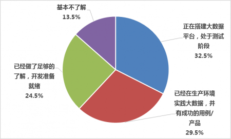
现有公司大数据的使用情况
其中，大家对大数据平台提出的的主要需求有：36.5%是进行海量数据的离线处理，比如大数据BI；23.2%是为了大量数据的实时处理，比如在线交互式分析；40.3%的公司的大数据平台则同时负责这两种业务。
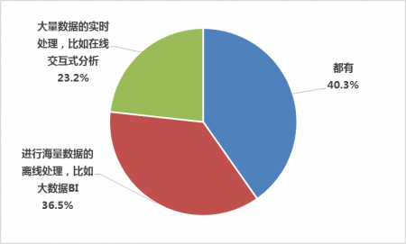
大数据平台主要负责的业务
传统观念下，大数据往往是大型互联网公司的玩物。然而，通过本次调查，我们却发现在那些对大数据平台有需求的公司中，研发团队规模远没有我们想象的大，29.11%的研发团队仅有1-10人，次居第二的10-50人的规模占到了25.77%,两种规模的研发团队就超过了一半。可见，当下大数据的需求已不止步于大型公司。
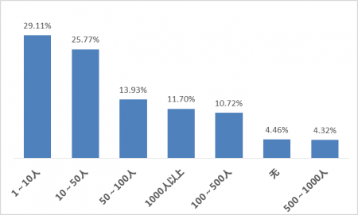
研发团队规模
从传统架构到大数据时代应用程序架构的转变往往都会遇到一些问题和挑战。在对计算框架门槛调查中，非专业人士难于入手这一难题的比例达到了46.5%，这对企业人才的培训提出了迫切的要求。
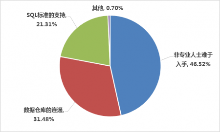
当下计算框架使用过程中存在的问题
打造大数据平台需要企业克服诸多问题和挑战，尤其是安全性和可靠性方面。
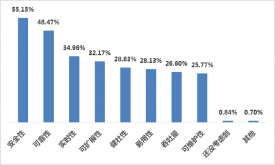
大数据平台打造的主要挑战
大数据技术现状
大数据技术在开发者或从业人员的应用中逐步走向成熟，这些成熟的技术在开发人员的探索中得到了初步的稳定发展，公司的使用便是对这些技术的肯定。包括开发语言，数据分析语言、数据库等在内的大数据工具，究竟哪个更适合自己的业务，相信开发者们都有自己的评判标准。
在众多的开发语言中，大数据平台开发者们尤为青睐Java，占到了总比例的65%， 远远超过其他开发语言。值得一提的是，Hadoop本身就由Java实现的。
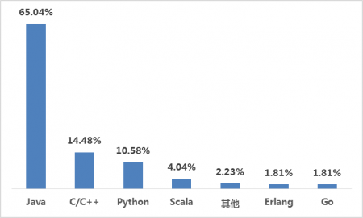
大数据开发语言
在大数据分析语言中，SQL的使用比例达到了64%，是R语言使用者人数的2倍之多。我们从中不难看出SQL-on-XXX项目的前景；同时从R的支持率上，也看到了更多非技术人员，比如数据分析师对低门槛分析类语言的需求。
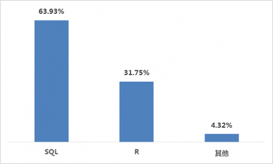
大数据分析通常用的语言
在大数据存储上，HBase则以67.55%的比例位居榜首，远超其他数据仓库，当然这点与Hadoop原生支持是分不开的。
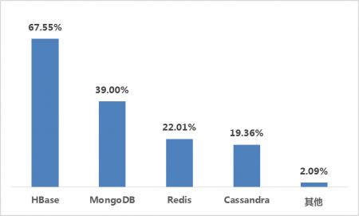
大数据存储中适合的数据库
对存储在HBase或Cassandra这样NOSQL数据库中的数据进行复杂查询，Solr、Elasticsearch、Splunk等主流的搜索引擎差距并不大。

对存储在NOSQL数据库中的数据进行复杂查询，比较合适的工具
大数据未来发展
诚如上文所说，许多对大数据有需求的公司并不一定具备强大的研发团队，在大数据处理过程中往往遭遇众多挑战。那么，在面临这些挑战时，开发者最迫切需要的是什么？
为了解决公司中的实际问题，39.28%的人希望拥有更犀利和通用的计算框架；37.88%的人希望能拥有更好的数据挖掘算法；21.59%的人则对保障性更高的运维有了更多的期盼。
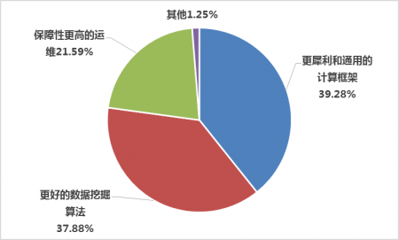
为了解决公司的实际问题，最希望拥有的新技术
良好的大数据计算平台能够有效地支撑企业的海量数据，对于下一代通用大数据技术平台，Spark和Hadoop是公司的主要选择。同时，我们也看到了新贵Spark的发展前景，对比老将Hadoop，差距也仅有3.7%。

人们看好的下一代通用大数据计算平台
现有公司中，大数据平台已包含的部件位居前三的主要是SQL数据库（90.3%）、NoSQL数据库（50.7%）和HDFS（47.2%），在此基础上，公司计划添加的部件主要包含SQL数据库（57.2%）、Spark（41.5%）和NoSQL数据库（26.9%）。从各公司已有大数据部件和计划添加的部件可以看出，SQL数据库和NoSQL数据库在公司的大数据平台中发挥了重要的作用，得到了各公司的青睐。
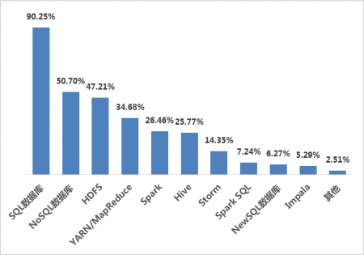
现有大数据平台已包含的部件
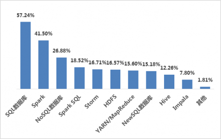
现有大数据平台计划添加的部件
为了获取更高的收益，企业在前期需要进行有效地成本投入，对大数据平台的投资，公司更加不会吝啬，其中被调查的人群中，45.7%的人所在企业有追加投资大数据平台的打算，同时，公司也期望能够通过多种途径完善大数据平台，主要的完善途径包括基于开源平台自主研发、购买成熟的解决方案，使用公有云。
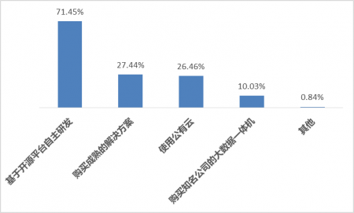
企业期望完善大数据平台的途径
使用公有云也是企业期望完善大数据平台的有效途径之一，在选择公有云平台方面，企业也面临着很大的倾向性，45.26%的人将阿里云作为首选。

公有云平台的选择
大数据技术培训
技术培训能够对开发者起到一定的指导作用，使得听众可以系统全面的把握新技术的知识脉络，了解技术的发展趋势。在此次调查活动中，69.4%的被调查者表示从未参加过大数据平台构建的技术培训。对于技术培训的形式，49%的人希望是线上培训，收费，成系列型的大数据解决方案，专攻一个方向，解决实际问题；37%的被调查者还是希望免费进行技术培训，即使不成系列，无论是线上线下，能听一节是一节。虽然收费在一定程度上影响了开发者对大数据技术培训的热情，但是能够切实解决实际问题，得到技术和能力的提升，仍是相关技术人员追求的培训目标。
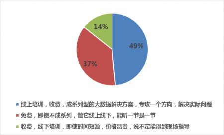
更适合的技术培训形式
那么，对开发者来说，大家特别期望从技术培训中获取的知识又会是什么？
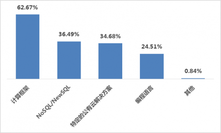
大数据领域，迫切学习或参加培训的新技术
写在最后
根据本次调查，我们不难发现，大数据仍然只在少数公司的生产环境投入使用，造成这个情况的原因主要有两个：首先，当下的大数据计算框架在使用上仍然存在很高的门槛；其次，受限于公司研发团队的实力。在大数据平台打造上，大部分机构都期望通过自主研发来完成这个过程，同时也期望获得更符合使用习惯的计算框架，比如SQL。同时，在自主研发和购买解决方案添加大数据属性之外，很多机构将注意力集中到云计算，其中国内云供应商阿里云45.26%的得票率更是值得欣慰。
附录：中奖的小伙伴们（PS：不包含获奖积分的同学）
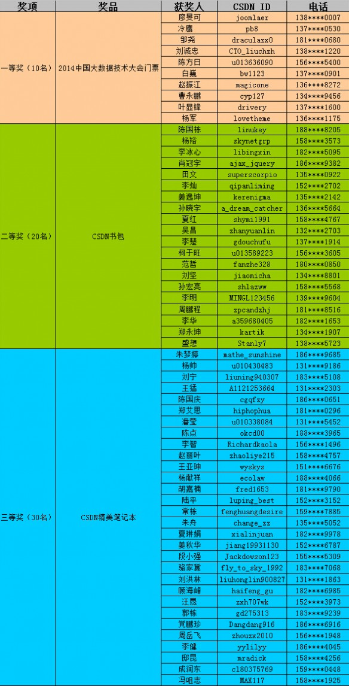
2014中国大数据技术大会（Big Data Technology Conference 2014，BDTC 2014）将于2014年12月12日-14日在北京新云南皇冠假日酒店召开。欢迎！

欢迎订阅“CSDN大数据”微信公众号，关注@CSDN云计算微博！
BDTC 2014期间，“CSDN大数据”微信公众号、@CSDN云计算微博将对会议进行全方位的报道。
本文为CSDN原创文章，未经允许不得转载，如需转载请联系market#csdn.net(#换成@)
- 顶
- 18
- 踩
- 0
- CSDN官方微信
- 扫描二维码,向CSDN吐槽
- 微信号：CSDNnews

微博关注
相关热门文章


01.jpg)

已有0条评论
还可以再输入500个字